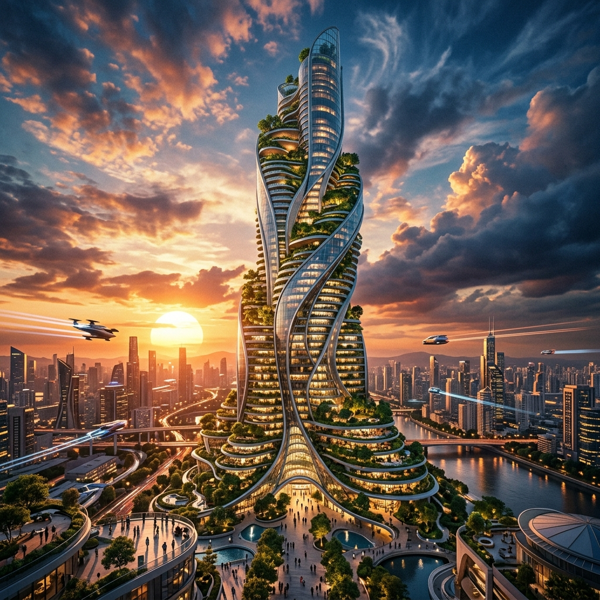

If you searched for an AI render tutorial on YouTube any time in the last six weeks, you have seen a version of the same thumbnail. A photo of a building, an arrow, an LLM logo, an arrow, a Midjourney logo, an arrow, a heroic glass facade at sunset. The voiceover is always some variant of "the best AI render workflow for architects, no plugins needed." The recipe under the thumbnail is almost always the same: feed your reference to Nano Banana Pro (Google's image model, formerly Gemini 2.5 Flash Image, rebranded and beefed up), bring the result into Midjourney V8 for an aesthetic pass, and use ChatGPT to write the prompts that move you between the two.
It is the kind of workflow that goes viral on YouTube because the steps look legible. Each tool does a thing. You can screenshot the prompts. You can post the final render. The watch-time is good. What the videos do not show is the hour and a half between the third Nano Banana iteration and the second Midjourney pass, when the geometry you locked in step two has quietly drifted, and the only way to recover is to back up to step one and start again with a colder prompt.
We spent a week running this stack on three real concept-stage projects — a 6,500 sf adaptive-reuse studio, a four-unit infill housing scheme, and a small civic pavilion — against our normal workflow, which is a single geometry-aware renderer (Veras or D5) plus one occasional Midjourney mood pass. Here is what the three-tool stack is actually doing for you, where it stops working, and whether the YouTube version is selling you on a workflow or selling you a watch-time hook.
What the three tools are each really doing
The first thing to fix is the marketing language. The videos describe each tool as if it is taking a discrete responsibility. In practice, the responsibilities overlap, and that overlap is where the workflow gets expensive in time.
Google · pay-as-you-go through Gemini API or AI Studio
The honest job is "image-to-image with a stronger sense of structural intent than a 2024-era diffusion model." Nano Banana Pro is unusually good at preserving the silhouette and the rough massing of a reference photo or sketch, and it follows multi-step textual edits ("keep the roofline, change the cladding to standing-seam zinc, push the glazing to the south face") better than Midjourney does. It is not a geometry-aware renderer in the Veras sense — it is not reading a 3D model — but it is closer to one than the previous generation of image models was.
Subscription · native 2K, faster than V7
Midjourney's role in this stack is to take a Nano Banana output and make it look like a render, not an AI image. The V8 engine is genuinely better at material specificity than the V7 it replaced, and the speed makes it cheap to throw twenty stylistic variants at a frame. But Midjourney does not respect geometry — it never has — so anything you ask it to "polish" risks giving you a new building. The discipline is to constrain it tightly enough that it touches lighting and material but not form. That discipline is hard.
Subscription · tutorial assumes GPT-5 / GPT-5 Pro tier
The third tool's only honest job is to translate your design intent into prompts that the other two models will not misread. The tutorials over-sell this. Asking ChatGPT to "write me a Midjourney prompt for a Brutalist civic pavilion at golden hour" produces a slightly above-average paragraph of prompt language. It does not understand your project. It does not know that the cladding is precast and tinted, or that the south face cannot have that much glazing because the client cannot afford the shading package. The LLM is doing prose engineering, not architectural reasoning. Treat it accordingly.
The actual workflow — cleaned of the tutorial-video gloss
If you strip the recipe down to the steps that survived contact with our three projects, this is what is left. We are listing it as we ran it, not as the videos sell it.
- Start with a real reference, not a text prompt.
Photograph the site, the precedent, or screenshot a SketchUp view. The single biggest cause of the workflow falling apart is starting in Midjourney with a text prompt, then trying to retrofit geometry later. The stack only works if Nano Banana has a real image to anchor to from step one.
- Run Nano Banana Pro for two passes maximum.
First pass: cladding, glazing, massing edits. Second pass: lighting and time of day. Stop there. By the third pass the model has started drifting on proportions in ways you will not catch until Midjourney exaggerates them.
- Hand the result to Midjourney with a constraint-heavy prompt.
Use
--srefon the Nano Banana output. Lock weight high (0.6–0.8). Use Midjourney for material finish and atmosphere only. Anything that asks Midjourney to "improve the design" will give you a different building. - Compare the Midjourney output to the Nano Banana reference, not the original photo.
If the silhouette has moved, throw the Midjourney output out and tighten the constraint. Do not try to fix it in another Midjourney pass.
- Use ChatGPT only at the boundaries.
Use it to write the initial Midjourney prompt from your design brief, and to clean up the final image's caption for the client deck. Do not use it as a planner that decides what each tool should do — that is your job.
Notice what is not in that list. There is no "let ChatGPT pick the best of 16 variants" step, because the LLM cannot meaningfully judge the renders. There is no "feed the Midjourney result back into Nano Banana for fidelity recovery" loop, because that loop introduces more drift than it removes. The actual workflow is leaner than the tutorial version, and most of the cleaning came from cutting steps that exist to extend video runtime, not because they improve the output.
Where the three-tool stack actually beats a single renderer
It beats a single tool in three specific cases. Outside these cases, it loses on time and consistency.
1. Pre-design and unbuilt references
When you do not have a 3D model yet — competition stage, feasibility study, RFP response — the geometry-aware renderers have nothing to lock to. Veras needs a Revit or SketchUp model. D5 needs a scene. The three-tool stack works from a photograph or a sketch, which is what you actually have at week one of a project. For pre-design, Nano Banana plus a Midjourney atmosphere pass produces something usable in twenty minutes that a Veras workflow cannot start producing until you have built a model.
2. Aesthetic exploration on a fixed massing
You have a massing you like. The question is "what does this look like in zinc versus brick versus charred timber, in three lighting conditions." Geometry-aware renderers are slow for this kind of fan-out because they want to re-render the scene each time. The three-tool stack — with a tight Nano Banana edit per material and a Midjourney pass for finish — is faster and cheaper for pure aesthetic variation.
3. Mood and atmosphere passes for client-facing storytelling
The video version of the workflow is honest about one thing: client decks live and die on atmosphere. Veras renders look correct. Midjourney renders feel cinematic. For the cover slide of a client presentation — the one image that has to make the client lean forward — the three-tool stack outperforms a single geometry-aware renderer almost every time. It is a tool for the front cover, not the documentation set.
Where it breaks
Three places we hit walls, on real projects, repeatedly.
Each pass through Nano Banana subtly shifts proportions. Each Midjourney pass invents detail. By the third round-trip your "iterative refinement" is producing a building that no longer matches the brief. A geometry-aware renderer does not have this failure mode — the model is the model. If your concept needs more than two or three loops, the multi-tool stack is the wrong stack.
Producing a north, east and south elevation of the same building, recognizably the same building, is the hardest thing this stack does. Midjourney's seed and style-reference features help, but you cannot rely on continuity the way you can with a Revit model. If the client deliverable is a coordinated set of three or more views, get the model into a geometry-aware renderer and stop fighting the stack.
This is the line every junior in a studio needs to hear once. A Midjourney-finished render, however convincing, is not a record drawing. It is not a planning document. It is not a contract image. The geometry has moved — even when it looks like it has not — and a contractor pricing off it will price the wrong building. The three-tool stack is a concept-and-mood tool. The render that goes to the planning department does not come out of it.
The honest comparison — against the single-renderer alternative
| Use case | Three-tool stack | Single geometry-aware renderer |
|---|---|---|
| Pre-design / no model yet | ✓ Wins — works from photos & sketches | — Cannot start |
| Material & lighting fan-out on fixed massing | ✓ Wins on speed & cost | Slower, more correct |
| Hero image for a client deck cover | ✓ Wins on atmosphere | Correct but less cinematic |
| Two-to-three iterations of design refinement | Acceptable | ✓ Wins — no drift |
| Coordinated multi-view set (N/E/S/W) | × Fragile continuity | ✓ Wins decisively |
| Anything heading to a deliverable or DD set | × Wrong tool | ✓ Right tool |
| Total time per usable image (week-one project) | ~20 min | ~75 min (build model first) |
| Total time per usable image (week-eight project) | ~45 min (continuity work) | ~10 min |
The three-tool stack wins early in a project, when you have references but no model. The geometry-aware renderer wins later, when the model is the source of truth and continuity matters. The mistake is treating one as a replacement for the other.
The prompt mistakes we kept making
Five specific things kept costing us iterations until we changed our prompting habits.
- Asking Midjourney to "render" a Nano Banana output — Midjourney does not render. It restyles. The word "render" in the prompt encourages it to invent depth and reflection that has nothing to do with your massing. Use "photograph," "stylize," or "finish" instead.
- Letting ChatGPT write multi-clause Midjourney prompts unchecked — the LLM defaults to overloaded prompts. Midjourney V8 is better with five short, weighted clauses than one long descriptive sentence. Edit the prompt down.
- Mixing time-of-day instructions inside Nano Banana edits — treat geometry edits and lighting edits as separate passes. Combining them is the fastest way to lose massing.
- Forgetting to lock the aspect ratio — Nano Banana and Midjourney will both drift aspect ratio if you do not pin it. Pin it explicitly on every prompt. The cropping you lose to a drifted aspect ratio is often the part of the elevation you needed most.
- Reading the YouTube tutorial as a method — it is a hook. The video has to fill seven minutes; your project does not. Most of the steps in the long-form version exist to extend the runtime, not the result.
We test multi-tool AI workflows on real architecture projects.
If a YouTube workflow is making the rounds in your office, we will run it against live work and report what survives a real deadline.
Read more workflow audits →Our take
The three-tool stack is real, and on a narrow set of project moments it is the best tool for the job. For week-one concept work — when you have a reference photo, a fee that does not justify a model, and a deck due Friday — Nano Banana Pro plus a constrained Midjourney pass is genuinely faster than building a model just so a geometry-aware renderer has something to chew on. For the cover slide of a client presentation, the cinematic quality of the stack outperforms a Veras render of the same building. Those are real wins. The YouTube tutorials are not wrong that the workflow exists.
They are wrong in three other ways. They oversell ChatGPT's role — the LLM is doing prose, not planning, and treating it as a planner is the fastest way to ship a prompt that produces the wrong building. They undersell the drift problem — the stack is a one-or-two-iteration tool, not an iterative-refinement tool, and the videos that show beautiful sixth-pass results are showing you survivorship bias from the runs that did not collapse. And they let the viewer assume the output is closer to a deliverable than it is. A finished Midjourney image is a mood image. It is not a coordinated view, it is not dimensionally honest, and the contractor pricing off it will get a different building than your geometry-aware renderer would have shown.
If the question is "should I learn this workflow," yes. It is the right tool for a specific phase of work, and the phase — week one of a project — is the phase where most studios are weakest at AI right now. If the question is "should I replace my geometry-aware renderer with this stack," no. They are doing different jobs, on different parts of the project, and the studios that get the most out of AI in 2026 are the ones that own both and switch between them with discipline.
Tested by Vista Studios on three live concept-stage projects between 13–20 May 2026. Tools: Nano Banana Pro via Google AI Studio, Midjourney V8 / V8.1, ChatGPT GPT-5. No affiliate or business relationship with any vendor named.